What we work on, by question
Our work is organized by research theme — the question each line of work answers — rather than by paper. Each theme lists its projects and instruments, finished and ongoing alike; the status chip on every entry tells you which. Numbers in monospace are measured or designed values, not aspirations.
H II galaxies as cosmic rulers
Compact star-forming galaxies whose Hβ luminosity tracks their velocity dispersion, giving an independent distance ladder from the local Universe to z > 2.
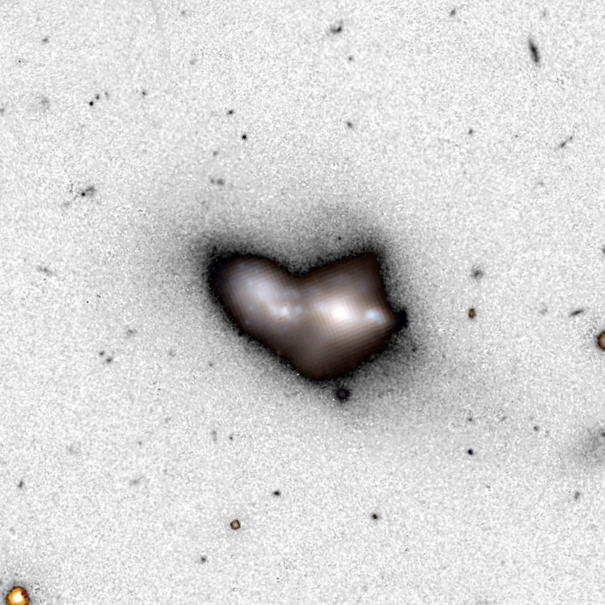
The compact H II galaxy SHOC 571 imaged by Euclid (VIS, Y, J), one of the 26 LCBGs observed with MEGARA. Figures: Camazón-Pinilla, Guzmán & Chanchaiworawit, A&A (submitted 2026); image: Euclid / MEGARA-GTC.
Local H II galaxies with GTC/MEGARA · MEGARA-LCBG
Spatially resolved IFU spectroscopy of local luminous compact blue galaxies as low-redshift analogs of high-redshift galaxies and as cosmic distance indicators.
MEGARA/GTC IFU spectroscopy of 26 local LCBGs shows that a kinematic correction for non-Gaussian line profiles reduces the scatter of the L(Hβ)–σ relation from 0.28 to 0.22 dex (Camazón-Pinilla, Guzmán & Chanchaiworawit, A&A submitted 2026).
- Facility
- 10.4-m GTC / MEGARA
- Key numbers
- 26 local LCBGs; L(Hβ)–σ scatter 0.28 → 0.22 dex
- Team
- Krittapas Chanchaiworawit
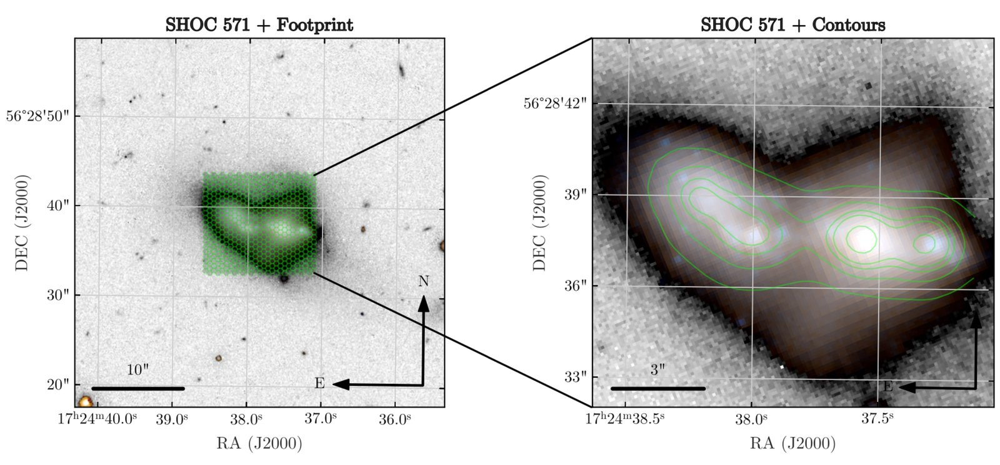
SHOC 571 in Euclid VIS/Y/J imaging with the MEGARA footprint and Hα contours. Figure: SEA OtTeRS / NARIT; imaging ESA/Euclid.
H II galaxies at z ≈ 1.5–2.5 with GTC/EMIR · EMIR-HII
Near-infrared multi-object spectroscopy of H II galaxies at z = 1.5–2.5 with EMIR on the 10.4-m GTC, extending the L(Hβ)–σ relation as a cosmic distance indicator.
H II galaxies are compact, gas-rich starbursts (EW(Hβ) ≳ 50 Å, R_eff ≲ 1 kpc) whose Hβ luminosity scales steeply with the velocity dispersion of the ionized gas, L(Hβ) ∝ σ⁵. That makes them standardizable candles that can bridge the distance-indicator desert at z ≈ 1.5–3, beyond the reach of Type Ia supernovae. The team observed H II galaxies with EMIR (near-infrared multi-object spectroscopy) and MEGARA on the GTC as part of the GOYA guaranteed-time survey between 2013 and 2019.
The limiting factor is the intrinsic scatter of the relation, up to ~0.3 dex in the local Universe. Current work uses the resolved kinematics from MEGARA to correct for non-Gaussian line profiles and second parameters — the same correction that reduces the scatter for local luminous compact blue galaxies from 0.65 to 0.37 dex — so that a corrected L–σ calibration is ready for application at z ≈ 1.5–3. Part of this is run as a SEASTAR student research project with Chulalongkorn University.
- Facility
- 10.4-m GTC / EMIR and MEGARA
- Key numbers
- z = 1.5–2.5; L(Hβ) ∝ σ⁵; GOYA survey, 30 guaranteed nights
- Timeline
- GTC programs 2013–2019; calibration work ongoing
- Team
- Krittapas Chanchaiworawit
- Partners
- R. Guzmán (University of Florida); GOYA survey team; Chulalongkorn University (SEASTAR student project)
Diamond-turned optics
Metallic and freeform mirrors made and measured on Thailand's first single-point diamond-turning line, for ground- and space-based instruments.
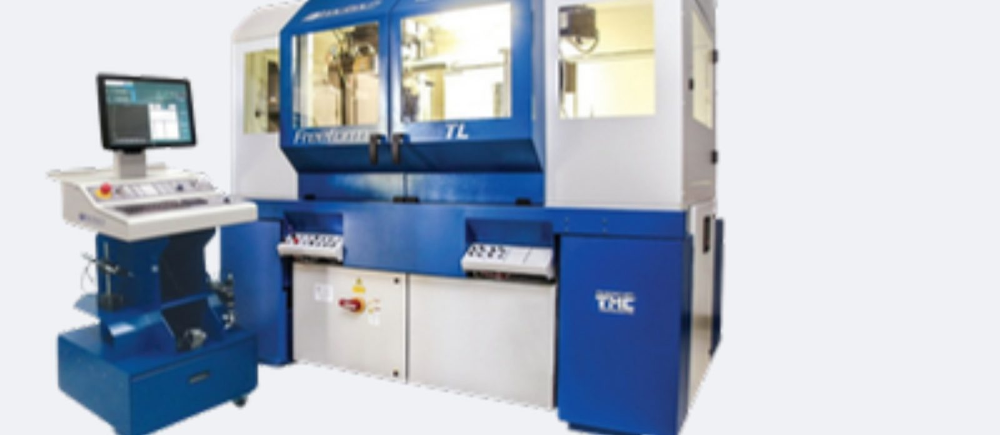
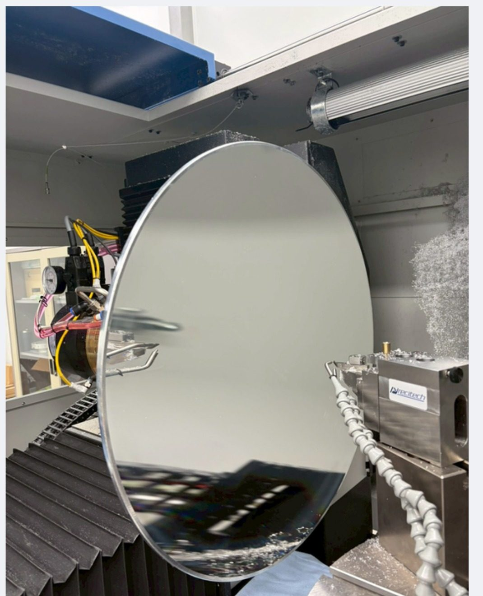
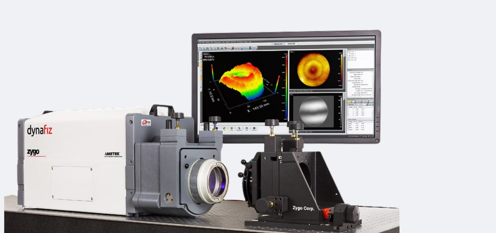
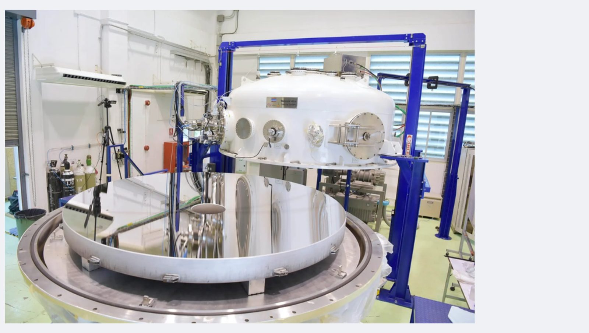
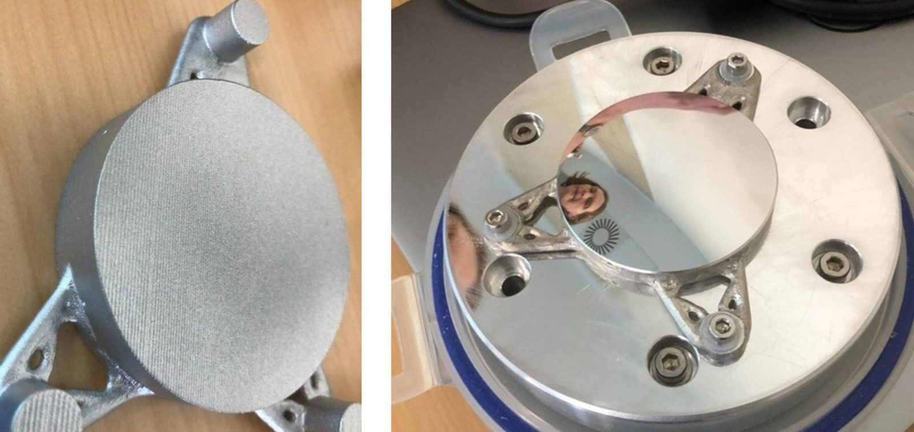
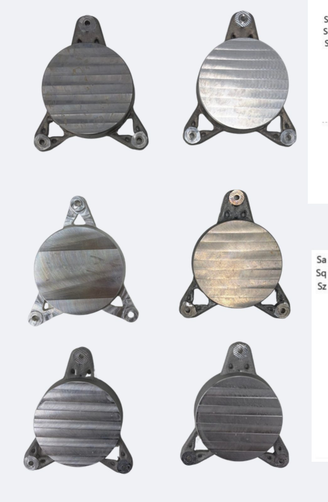
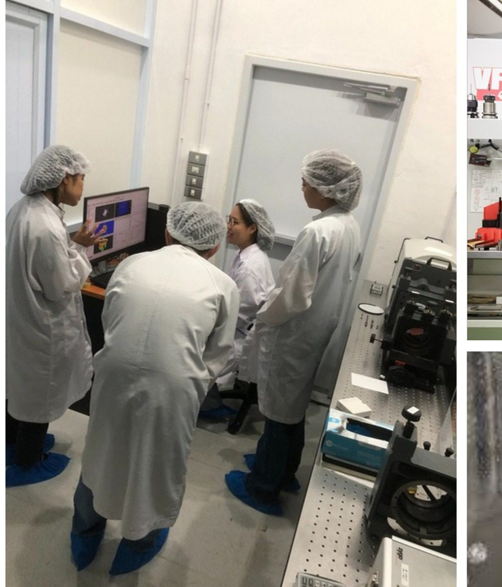
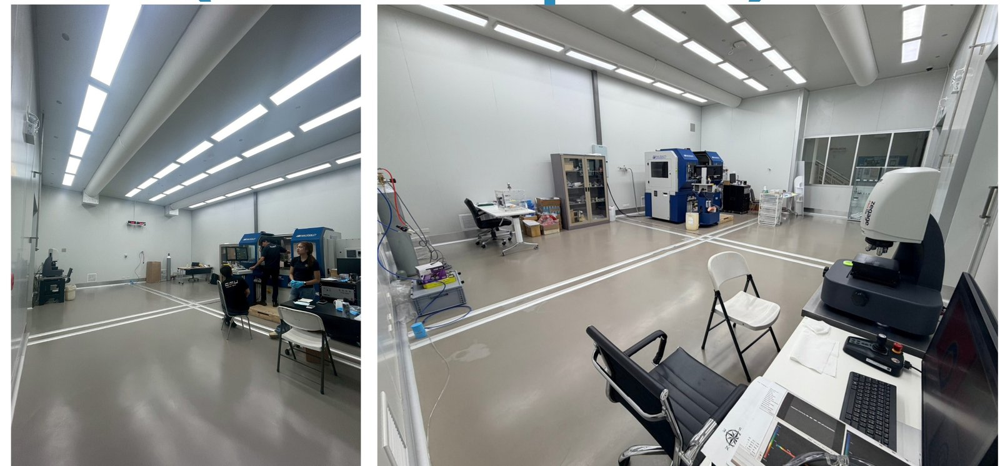
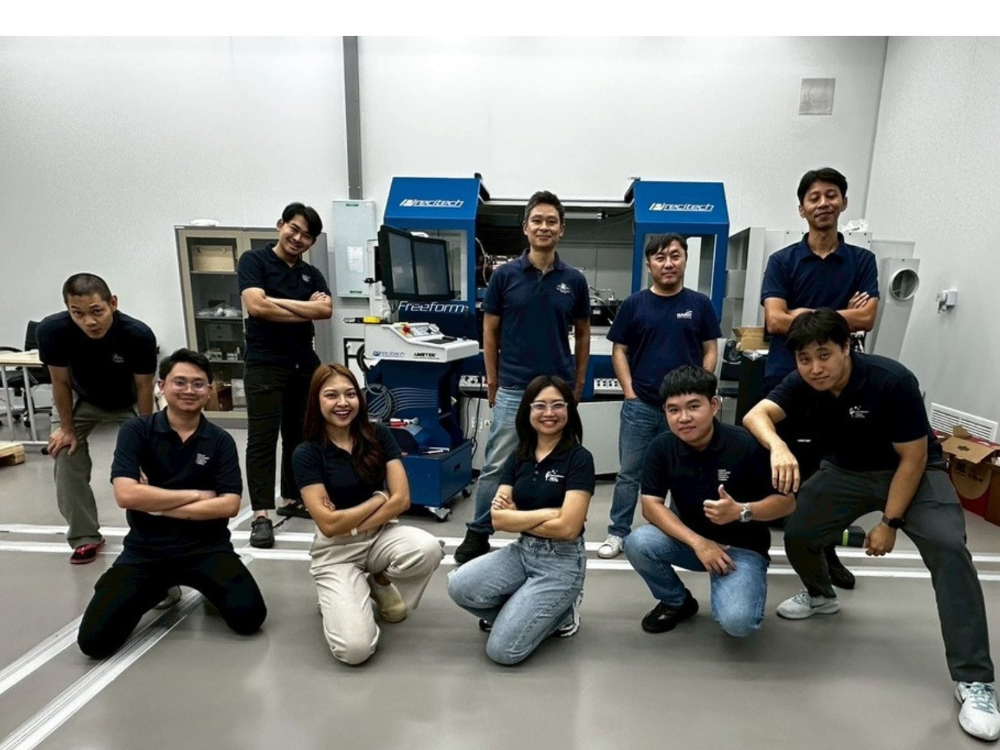
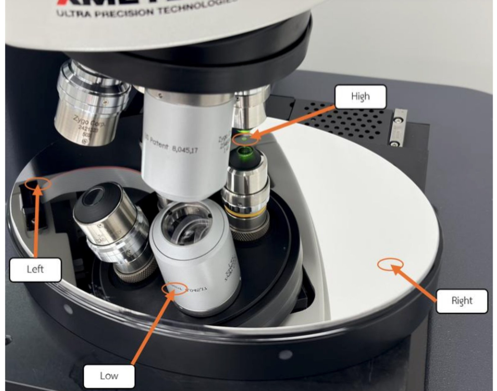
Precitech Freeform L 5-axis SPDT machine at SEAL Lab. Photos: SEAL Lab / NARIT.
SPDT Engineering, Assembly, and Laser Metrology Laboratory · SPDT
Thailand's first ultra-precision reflective-surface laboratory: 5-axis single-point diamond turning, surface metrology, and a complete design-to-metrology production line for metallic and freeform optics.
A 5-axis single-point diamond-turning machine in a temperature-controlled enclosure, 3D surface profilers, a cryo-cycling chamber, and an ultra-precision CMM. The production line Design → CNC → polishing → SPDT → metrology has reached TRL 6.
FY68 delivered the SPDT machine, profilers, cryo-chamber, and a TRL-4 production line; FY69 added the metrology upgrade (ultra-precision CMM, surface-quality tester, vacuum oven); FY70 proposes a surface-verification system (dual-mode laser interferometer, high-power microscope) and environmental control.
- Facility
- 5-axis SPDT machine; 3D surface profilers; cryo-cycling chamber; ultra-precision CMM
- Key numbers
- Ra < 5 nm; PV < λ/6; TRL 6
- Timeline
- 2025–2027 (NARIT program ST68–ST70)
- Team
- Krittapas Chanchaiworawit; Picha Ruenarrom; Tarathon Intaros
- Partners
- Durham University (CfAI); UKATC; RAL Space
- Funding
- NARIT program ST68/ST69/ST70; PMU-B FY2569 N46 Research Institutions Empowerment Program
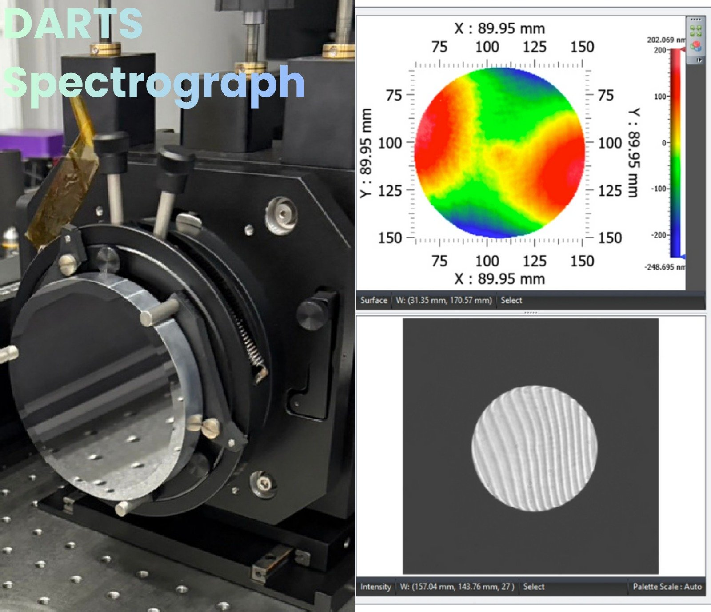
The diamond-turned slit-viewing mirror mounted on the DARTS bench, with its DynaFiz form map. Photos: SEAL Lab / NARIT; K-mirror photo and drawings: NARIT.
DARTS alignment and slit-viewing mirrors · DARTS
Diamond-turned slit-viewing mirrors and slit masks for DARTS, the robotic transient spectrograph NARIT is building for Lick Observatory.
DARTS (Dual-beam Automatic Rapid Transient Spectrograph) is a fully robotic low-resolution spectrograph for classifying transients — supernovae, variable stars, active galaxies — in the era of large surveys such as the Vera C. Rubin Observatory. It covers 360–1,000 nm simultaneously in blue and red channels at R ≈ 1,000, with a K-mirror image derotator and an EMCCD slit-viewing camera. The optical design comes from UCO/Lick; most of the mechanical design, manufacturing, assembly, and alignment happens at NARIT. The first unit is bound for the Left Nasmyth port of the 2.4-m Automated Planet Finder at Lick Observatory, California, with a second planned for the Thai National Telescope.
SEAL Lab's contribution is the reflective optics: the slit-viewing mirrors were the first prototype on the lab's list in February 2024, were machined on the Freeform L and verified on the DynaFiz interferometer, and are now mounted on the DARTS bench. The slit masks are also cut by single-point diamond turning. Delivered as a FY2568 output.
- Facility
- 5-axis SPDT machine; DynaFiz interferometer
- Key numbers
- DARTS: 360–1,000 nm dual channel; R ≈ 1,000; slit-viewing mirror aperture ≈ 90 mm
- Timeline
- Prototype list Feb 2024; mirrors delivered FY2568 (2025)
- Team
- Tarathon Intaros; Picha Ruenarrom; Krittapas Chanchaiworawit
- Partners
- UCO / Lick Observatory; NARIT DARTS team (Samaporn Tinyanont, Thansita Thomrungpiyathan)
- Funding
- NARIT program ST68
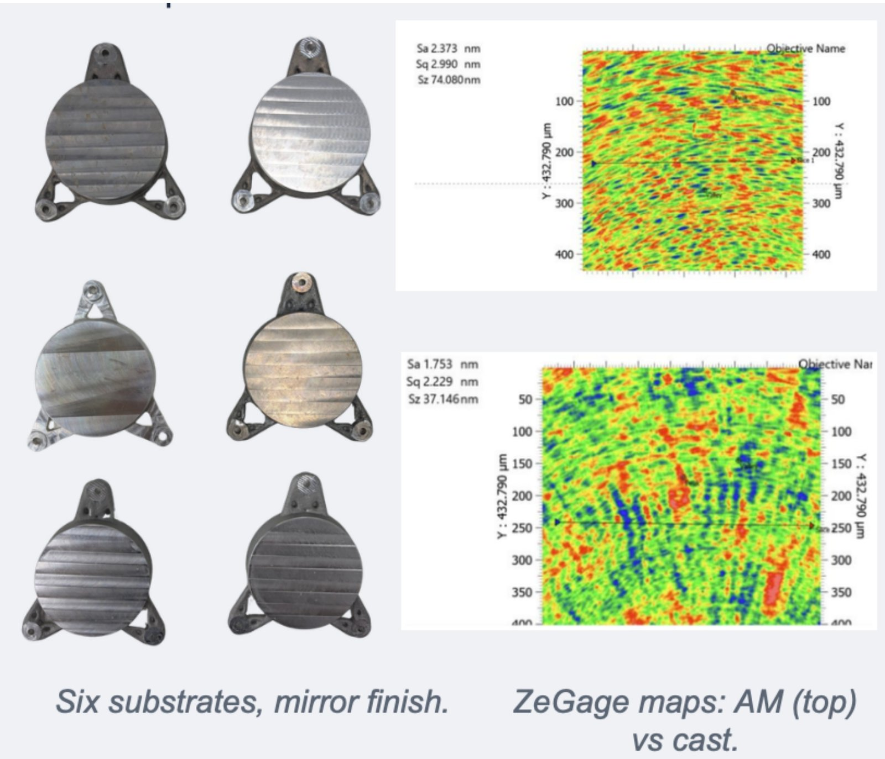
Six cast and 3D-printed aluminum substrates before and after single-point diamond turning. Photos and figures: SEAL Lab / NARIT with UK ATC; lattice substrate design and fabrication: UK ATC.
Additively manufactured mirrors for space missions with UK ATC · AM-MIRRORS
Can we 3D-print a mirror? Diamond turning and testing of additively manufactured aluminum mirror substrates for space missions, with the UK Astronomy Technology Centre.
Additive manufacturing lets a mirror be printed with a lightweight lattice behind its face — attractive for CubeSats and space telescopes — but only if the printed alloy can be diamond-turned to an optical finish. The team machined six substrates under identical conditions (2,000 rpm, 5 mm/min feed, 2 µm depth of cut, 21–23 °C): a cast RSA 6061 baseline, AlSi10Mg from two suppliers, and Scalmalloy, each with and without hot isostatic pressing (HIP). Stress-relieved AlSi10Mg reached a surface roughness Sq of 2.99–3.77 nm, close to the cast baseline of 2.23 nm, while HIP closed pores but coarsened the grains and roughly doubled the roughness (7.67 nm for AlSi10Mg + HIP, 12.53 nm for Scalmalloy + HIP). Specular reflectance over 400–900 nm matched cast aluminum for Scalmalloy and reached 70–80% for AlSi10Mg. The conclusion: printed mirror substrates are viable today with the right alloy and heat treatment.
The work grew out of the Newton Fund STFC–NARIT project on freeform-optics manufacturing (Durham University lead, 2020–2022) and a 2022 SPIE study of lightweight mirror design for conventional and additive manufacturing. It was published at SPIE Astronomical Telescopes + Instrumentation 2026 (Ruenarrom et al.) and continues with AM mirror prototypes for the ADOT 6U CubeSat with UK ATC. A PMU-B FY2570 proposal (F11) would take a CubeSat micro space-telescope prototype built from freeform 3D-printed parts and SPDT mirrors through a full space-qualification chain (outgassing, atomic oxygen, thermal vacuum, vibration, radiation) with TINT, UK ATC, and RAL Space, from TRL 3 to 4–5.
- Facility
- 5-axis SPDT machine; ZeGage profilometer; DynaFiz interferometer
- Key numbers
- Sq: cast 2.23 nm; AlSi10Mg (SR) 2.99–3.77 nm; Scalmalloy (SR) 7.57 nm; + HIP 7.67–12.53 nm
- Timeline
- Newton Fund 2020–2022; SPIE 2022 and 2026; PMU-B F11 proposal Aug 2026
- Team
- Picha Ruenarrom; Tarathon Intaros; Krittapas Chanchaiworawit; Manlika Pinkaew
- Partners
- UK Astronomy Technology Centre (C. Atkins, Y. Chahid, V. Oyarzun, S. McPhee, L. Millan); Durham University (CfAI); RAL Space; TINT
- Funding
- Newton Fund STFC–NARIT (2020–2022); NARIT program ST68–ST70; PMU-B FY2570 F11 (proposed)
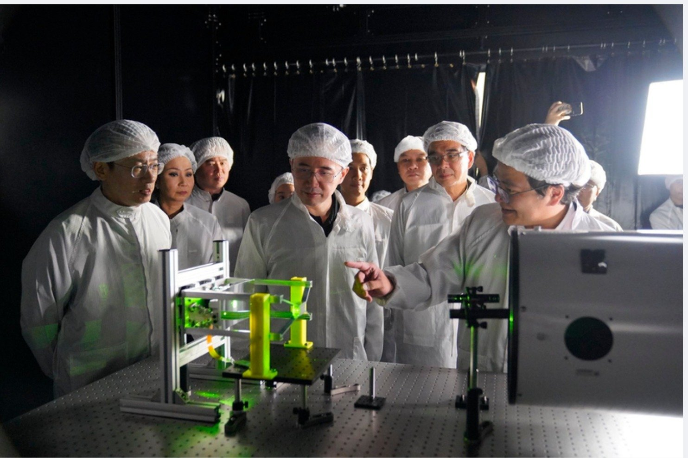
MHESI leadership viewing the 6U CubeSat telescope optics under alignment at SEAL Lab. Photos and drawings: SEAL Lab / NARIT / Thai Space Consortium; CubeSat render: NARIT.
Mirrors for the TSC 6U CubeSat telescope · TSC-CUBESAT
Primary and secondary mirrors, machined in-house by diamond turning, for the Thai Space Consortium's 3U and 6U CubeSat space telescopes.
NARIT's CubeSat program is developing two Cassegrain space telescopes whose mirrors are made in Thailand for the first time: a 3U unit (about 6 kg, 100 × 100 × 340.5 mm, 4.7 m ground sampling distance from a 550-km sun-synchronous orbit) and a 6U unit (about 12 kg, 100 × 200 × 340.5 mm, 1.8 m ground sampling distance). SEAL Lab machines the M1 and M2 mirrors from GD&T-controlled shop drawings on the Freeform L, verifies their form on the DynaFiz interferometer, and aligns the optics in the lab; the 3U mirror is built on a lightweight lattice back.
The lab also delivered the retroreflectors for TSC-1 and a prototype tertiary mirror for TSC-1's hyperspectral imager among its FY2568 outputs, and the 6U optics were shown to the leadership of the Ministry of Higher Education, Science, Research and Innovation during its visit to the lab. The satellites are assembled in Thailand with a ground station at NARIT.
- Facility
- 5-axis SPDT machine; DynaFiz interferometer; SEAL Lab alignment bench
- Key numbers
- 6U: ~12 kg, 100 × 200 × 340.5 mm, 1.8 m GSD at 550 km; 3U: ~6 kg, 4.7 m GSD; 3U mirror Ø ≈ 52 mm
- Timeline
- Prototypes FY2568–FY2569 (2025–2026)
- Team
- Tarathon Intaros; Picha Ruenarrom; Krittapas Chanchaiworawit
- Partners
- Thai Space Consortium (TSC)
- Funding
- NARIT program ST68–ST70
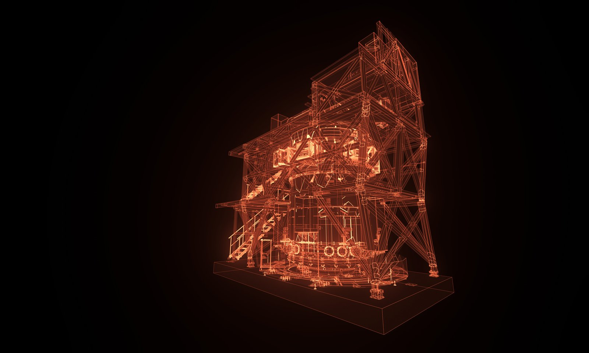
Artist's impression of the HARMONI instrument model for ESO's Extremely Large Telescope. HARMONI model: ESO (CC BY 4.0); machine photo: SEAL Lab / NARIT.
Freeform Zerodur mirrors for ELT/HARMONI · HARMONI
Proposed upgrade of the diamond-turning line to 700 mm and to low-expansion glass (Zerodur, ULE, fused silica), with Oxford's HARMONI team and ESO, aimed at ELT-class freeform optics.
HARMONI is the first-light visible and near-infrared integral-field spectrograph of ESO's Extremely Large Telescope, led by the University of Oxford and now in its final design phase. Its optics — and those of other ELT instruments — call for large freeform mirrors in low-thermal-expansion glass. SEAL Lab's Freeform L currently handles workpieces up to 650 mm in metal. The N43 Frontier Research Infrastructure proposal submitted to PMU-B in August 2026 would raise the capacity to 700 mm, qualify ductile-regime machining of fused silica, ULE, and Zerodur, add a sub-micron defect-inspection microscope and coating and vacuum equipment, and produce at least three ELT-class demonstration optics with Ra ≤ 5 nm and PV ≤ 0.1 µm, reviewed and accepted by the Oxford HARMONI team and ESO. The plan takes the brittle-optics production line from TRL 4 to 6 in twelve months, trains six certified engineers, and targets entry into the ELT instrument supply chain.
Status: proposal under evaluation. Oxford and ESO have committed in-kind contributions (optical-design effort, interface specifications, instrument requirements, and facility access) matching NARIT's request.
- Facility
- 5-axis SPDT machine (upgrade to Ø 700 mm proposed); DynaFiz interferometer
- Key numbers
- Ø 700 mm; Ra ≤ 5 nm; PV ≤ 0.1 µm; TRL 4 → 6; 12 months
- Timeline
- Proposal submitted Aug 2026 (PMU-B FY2570, N43)
- Team
- Krittapas Chanchaiworawit; Tarathon Intaros; Picha Ruenarrom
- Partners
- University of Oxford (HARMONI instrument team); ESO
- Funding
- PMU-B FY2570 N43 (proposed, ≥ 20 M THB with 50% partner co-investment)
Tertiary mirror for a radio telescope
Tertiary mirror for a radio telescope.
Details in preparation — this entry has the project title and scope only; results, numbers, and figures will be added once the team has reviewed them.
Black holes and their host galaxies
How supermassive black holes grow together with their hosts, read from AGN variability, host morphology, and reverberation lags.
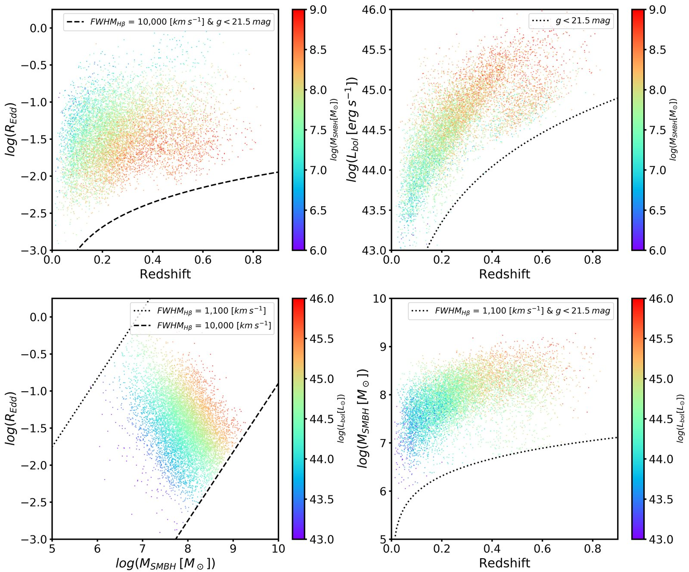
Black-hole mass, Eddington ratio, and bolometric luminosity of the SDSS DR17 AGN sample versus redshift. Figures: Chanchaiworawit & Sarajedini 2024, ApJ 969, 131; cutouts: SDSS.
Ensemble AGN variability in SDSS DR17 · SDSS-AGN
Ensemble structure functions of intrinsically low-luminosity AGN at z < 0.84 from PCA-decomposed SDSS spectra (Chanchaiworawit & Sarajedini, ApJ 2024).
Most AGN variability studies are dominated by bright quasars. This one targets the quiet majority: intrinsically low-luminosity AGN in SDSS DR17 at z < 0.84 with bolometric luminosities of 10⁴³–10⁴⁶ erg/s and Eddington ratios above 0.002, whose light is blended with their host galaxies. Principal-component decomposition of the spectra separates the AGN from the host, yielding black-hole masses (from the broad Hβ line, FWHM > 1,000 km/s) and Eddington ratios, and the AGN-only magnitudes in different epochs — photometric versus spectrophotometric — give the variability.
The ensemble structure functions rise with rest-frame time lag as power laws with slopes of about 0.20–0.22 in g, r, and i, and the amplitude maps out across the black-hole-mass–Eddington-ratio plane: variability is driven mainly by the accretion rate rather than by black-hole mass. Published as Chanchaiworawit & Sarajedini (2024, ApJ 969, 131); the same sample now feeds the AGN host-morphology project.
- Facility
- SDSS DR17
- Key numbers
- z < 0.84; log L_bol ≈ 43–46; Eddington ratio > 0.002
- Timeline
- 2019–2024
- Team
- Krittapas Chanchaiworawit
- Partners
- V. Sarajedini (Florida Atlantic University)
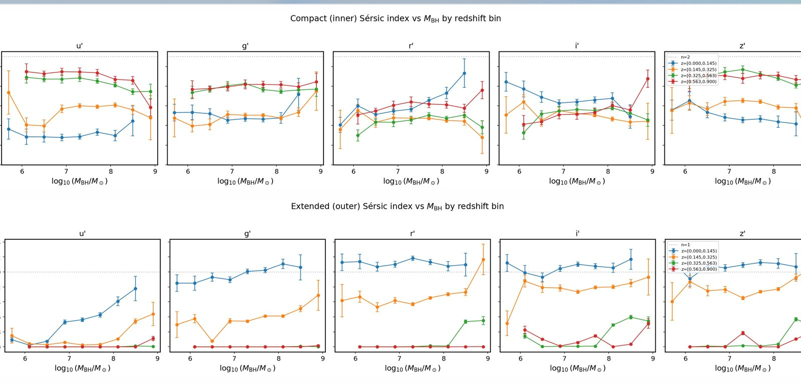
Sérsic index of the inner and outer host components versus black-hole mass, by redshift bin. Figures: T. Klipbua, K. Chanchaiworawit & V. Sarajedini, APRIM 2026 talk; data: SDSS.
AGN host-galaxy morphology across cosmic time · AGN-MORPH
Sérsic-profile decomposition of ~16,000 SDSS AGN hosts as a predictor of supermassive black-hole growth (Klipbua, Chanchaiworawit & Sarajedini, APRIM 2026).
Does the shape of a galaxy tell us how its black hole grew? This project fits three-component models — an AGN point source plus inner and outer Sérsic profiles — to the SDSS images of about 16,000 low-luminosity Seyfert-1 AGN at z = 0–0.9 with black-hole masses of 10⁶–10⁹ solar masses, drawn from the sample of Chanchaiworawit & Sarajedini (2024). Black-hole masses come from multicomponent spectral decomposition; simulations set the reliability limits (S/N > 40, AGN fraction < 0.8, fitting error < 0.5 dex), and coefficients are bootstrapped in the g', r', and i' bands.
First results, presented by Thatchayuth Klipbua at APRIM 2026 in Hong Kong: the Sérsic index correlates positively with black-hole mass and with Eddington ratio, and negatively with redshift — hosts at higher redshift are less morphologically developed.
- Facility
- SDSS imaging and spectra
- Key numbers
- ~16,000 Seyfert-1 AGN; z = 0–0.9; log M_BH = 6–9; 3-component Sérsic fits
- Timeline
- Talk at APRIM 2026 (Hong Kong, May 5, 2026)
- Team
- Thatchayuth Klipbua; Krittapas Chanchaiworawit
- Partners
- V. Sarajedini (Florida Atlantic University)
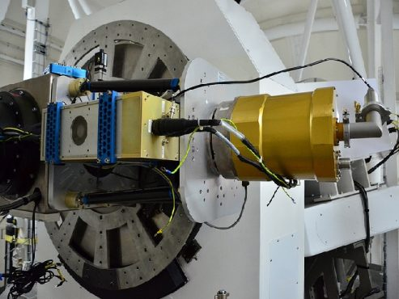
ULTRASPEC on the 2.4-m Thai National Telescope. Photo: NARIT.
Photometric reverberation mapping of a z = 0.535 AGN in MACS J1149 · MACS J1149 RM
Multi-band (ugriz) monitoring of an AGN behind the galaxy cluster MACS J1149 with ULTRASPEC on the 2.4-m TNT to measure time lags and infer the black-hole mass.
A 2020 ugriz monitoring campaign with ULTRASPEC on the 2.4-m Thai National Telescope. The analysis combines a PSF/aperture photometry pipeline with ICCF, JAVELIN, and Gaussian-process lag analysis, leading to a black-hole mass inference. Manuscript in preparation for ApJ.
- Facility
- 2.4-m TNT / ULTRASPEC
- Key numbers
- z = 0.535; ugriz
- Timeline
- 2020 campaign; paper in preparation
- Team
- Krittapas Chanchaiworawit
Dark matter and dark energy
Mission simulations for ESA's ARRAKIHS and machine-learning inference for JWST-era galaxies, feeding tests of the dark sector.
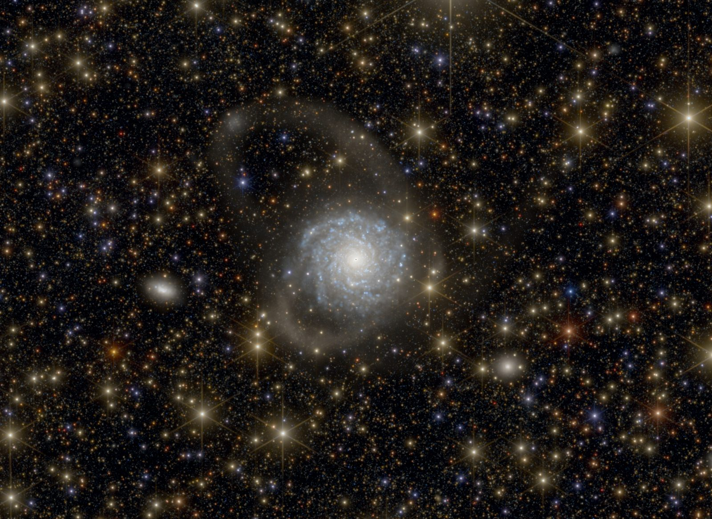
Simulated ARRAKIHS mock image of a galaxy halo (A. Camazón / ARRAKIHS consortium, CC BY 4.0). Images: A. Camazón (IEEC) / ARRAKIHS Mission Consortium, CC BY 4.0; Satlantis / ARRAKIHS Mission Consortium; NARIT (news, 12 Jun 2026).
ARRAKIHS mission simulations · ARRAKIHS
Mission simulations and mock observations for ESA's ARRAKIHS dark-matter space telescope; NARIT is the first Thai institute in an approved ESA mission.
NARIT's simulation-software development for ARRAKIHS began in 2018, and the institute is represented in the mission consortium by the team PI. NARIT's CHALAWAN cluster is one of four computing systems supporting mission simulations worldwide: the mock observations feed the mission's image-simulation pipeline and also yield cosmological dN/dz science from the background galaxies.
The mission was adopted by ESA's Science Programme Committee on 10–11 June 2026 as the second F-class mission (F2), with launch planned for late 2030. ARRAKIHS will image the faint outskirts of at least 80 Milky-Way-mass galaxies over 3–5 years with two binocular telescopes covering 280–1,600 nm in four bands, to count stellar streams and satellites and so test the nature of dark matter. The consortium spans nearly 48 institutions in 17 countries; Thailand is a contributing country through NARIT.
- Facility
- NARIT CHALAWAN HPC cluster
- Key numbers
- ESA F-class mission; launch planned late 2030
- Timeline
- 2018– (ESA adoption June 2026)
- Team
- Krittapas Chanchaiworawit; Wissarut Jarernsupapon; Narenrit Thananusak; Utane Sawangwit
- Partners
- ARRAKIHS consortium (ESA)
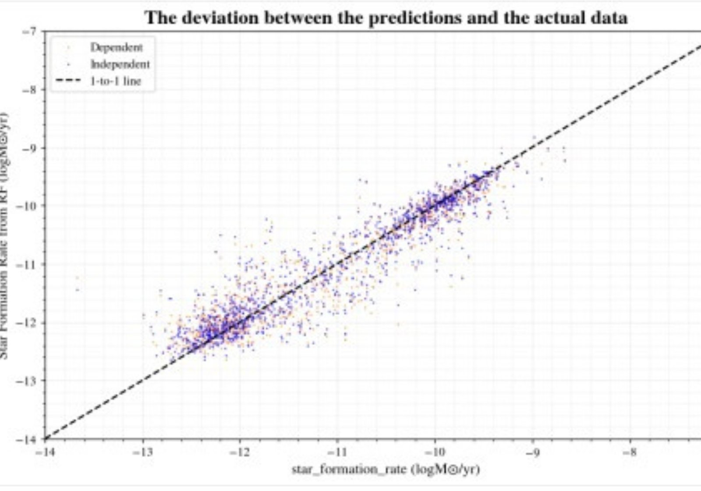
Random-forest star-formation rates recovered from photometry versus the SED-fitted values. Figures: G. Cherdchoochavalit & K. Chanchaiworawit, SEA OtTeRS (ISAC 2026).
Machine-learning parameter extraction for high-redshift galaxies · ML-HRO
Machine-learning inference of physical properties and redshift classes of JWST-era high-redshift galaxies from photometry and imaging.
The idea is to teach a machine on real, well-understood data and then let it read the JWST era. Random-forest regressors are trained on SDSS galaxies to extract physical parameters from photometry; the low-redshift frames are then transformed to z > 3–10, the SDSS bandpasses are matched to the JWST/NIRCam wide filters, and the trained models are applied to JWST galaxies to predict properties that would otherwise need spectroscopy. Convolutional neural networks trained on imaging separate object types and redshift classes.
First results recover star-formation rates from photometry alone that follow a tight one-to-one relation with the SED-fitted values. The project is led by Gunmethus Cherdchoochavalit — it began as his BSc thesis at Chiang Mai University (2025), where he is now an MSc student — and has been presented at SPC 2025 and APRIM 2026.
- Facility
- JWST archive
- Team
- Krittapas Chanchaiworawit; Gunmethus Cherdchoochavalit
Cosmic structure and the star-formation history
Protoclusters from z = 6.5 to cosmic noon, bursty star formation in the JWST era, and how environment and spin regulate galaxy growth.
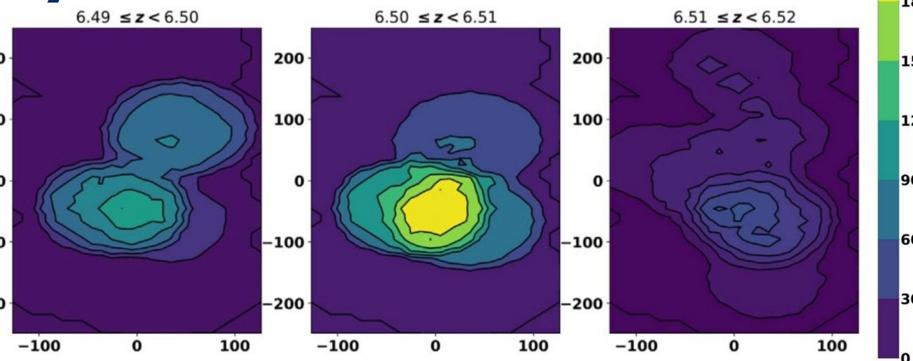
Mass-density maps of the z = 6.5 protocluster in three redshift slices. Figures: Chanchaiworawit et al. 2019, ApJ 877, 51; Calvi et al. 2019, MNRAS 489, 3294 (GTC/OSIRIS).
Lyman-α emitter protocluster at z = 6.5 · LAE-z6.5
Discovery and spectroscopic confirmation of a Coma-analog protocluster of Lyman-α emitters at z = 6.5 with the 10.4-m GTC (OSIRIS imaging and multi-object spectroscopy).
About 45 h of OSIRIS imaging to 26.5 mag (AB) and 42 h of multi-object spectroscopy on the GTC (≈ 87 h in total) revealed an overdense region of Lyman-α emitters at z = 6.5, confirmed spectroscopically and characterized as a Coma-analog protocluster (MNRAS 2017; ApJ 2019; MNRAS 2019; MNRAS Letters 2020).
- Facility
- 10.4-m GTC / OSIRIS
- Key numbers
- z = 6.5; ≈ 87 h of GTC time
- Timeline
- 2013–2020
- Team
- Krittapas Chanchaiworawit
- Partners
- R. Guzmán (University of Florida); J. M. Rodríguez Espinosa; E. Salvador-Solé
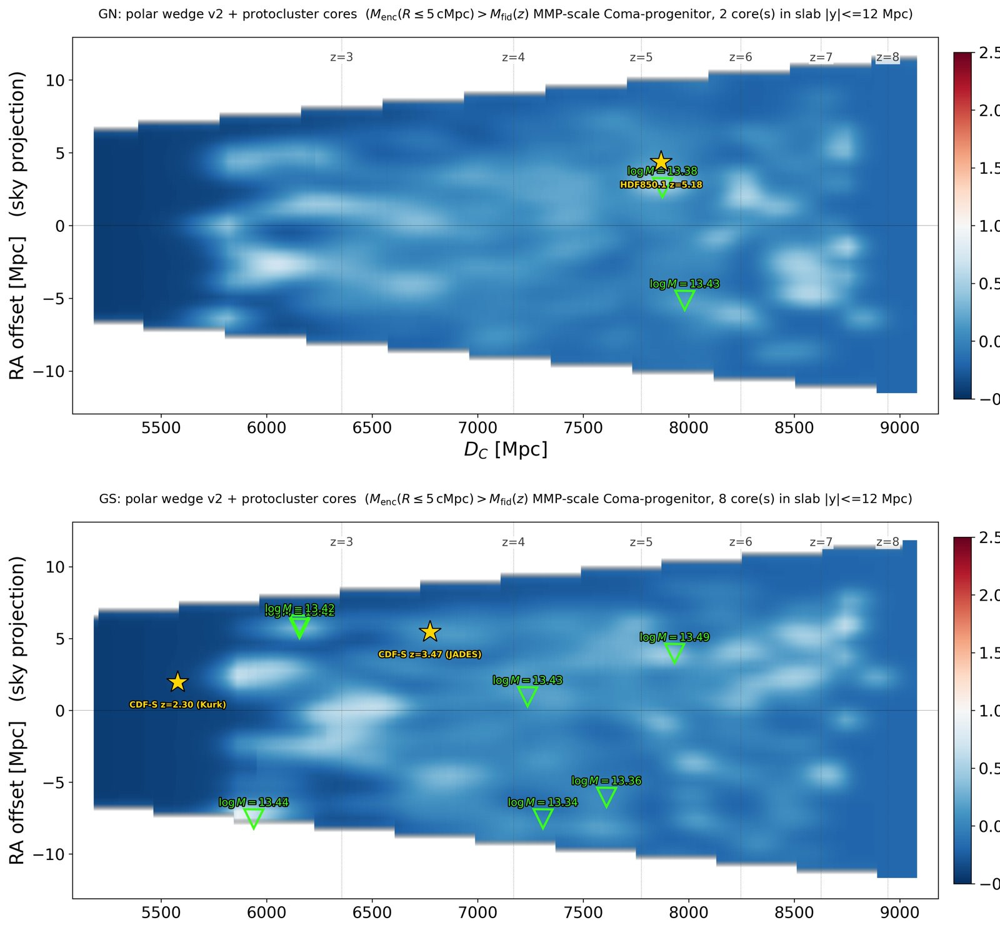
Matter-density contrast maps of the JADES fields, the starting point for the cosmic-noon census. Figure: Chanchaiworawit et al., in preparation (APRIM 2026).
Protoclusters at cosmic noon · PC-NOON
Systematic identification of protoclusters at cosmic noon, led by Atthaporn Pramoun.
A new line of work that extends the team's protocluster census from z = 6.5 and the JADES fields toward cosmic noon, when today's clusters were assembling. It builds on the density-contrast mapping already developed for JADES GOODS-N and GOODS-S (number density within R = 5 cMpc, scaled by the galaxy bias to a matter-density contrast, with cores of most-massive-progenitor scale) and applies it systematically to identify protocluster candidates. Method paper and first catalog in preparation.
- Facility
- JWST and HST archives
- Timeline
- Started 2026
- Team
- Atthaporn Pramoun; Krittapas Chanchaiworawit
Matter-density contrast maps of the JADES GOODS-N and GOODS-S fields with protocluster cores marked. Figures: Chanchaiworawit et al., in preparation (APRIM 2026); data: JWST/JADES and HST.
Bursty star formation at z > 6 in the JWST era · JWST-SF
How large-scale structure formation enhances or quenches star formation on the main sequence at z > 6, toward the epoch of first assembly and reionization.
Did the first overdensities make their galaxies grow faster, or just earlier? The team selected 1,169 galaxies at z = 2–8 in the JADES GOODS-North and GOODS-South fields with 19–22 HST/WFC3 and JWST/NIRCam bands, measured photometric redshifts with EAZY, and fitted every SED with CIGALE 2025.1 using a stochastic star-formation history (80 random-walk realizations per galaxy) plus an AGN component. Counting galaxies within 5 comoving Mpc and scaling by the galaxy bias turns the maps into matter-density contrasts, with cores of most-massive-progenitor scale (enclosed mass ~2 × 10¹³–10¹⁴ solar masses; 39 core members).
What comes out: most galaxies are metal-poor even in the cores; core members had stronger bursts in the last 30 Myr while the outskirts match the field; the star-forming main sequence sits 0.3–0.5 dex higher in overdense bins; stellar populations near the density peaks are younger than 200 Myr; and about 40% of z > 6 galaxies are caught between bursts. At the densest cores (δ_m > 20, z > 4) the dynamical time of ~0.5 Gyr is comparable to the time since the last burst — the environment appears to set the rhythm of star formation. A companion spectroscopic study uses the lensed z ≈ 7.87 protocluster behind Abell 2744 from the UNCOVER program. Presented at SPC 2025, EAMA11, and APRIM 2026; manuscript in preparation.
- Facility
- JWST archive
- Team
- Krittapas Chanchaiworawit; Wissarut Jarernsupapon; Narenrit Thananusak; Gunmethus Cherdchoochavalit; Utane Sawangwit
SDSS images of the first MEGARA targets with the IFU position angles. Figures: SEA OtTeRS / NARIT; SDSS imaging; MaNGA illustration: Dana Berry / SkyWorks Digital, David Law, and the SDSS collaboration (CC BY).
Star formation, spin, and environment with IFUs · IFU-SPIN
Integral-field study of star formation, the spin parameter, and local matter density in galaxies with MEGARA/GTC, MaNGA/SDSS, and Hector/AAT.
Why does star formation in the early Universe come in short, sharp bursts, and why do galaxies quench as they fall into clusters? The team's working hypothesis is spin-regulated star formation: gas with high angular momentum keeps a galaxy's spin parameter high and its fuel spread out; when the high-spin gas is removed — by ram-pressure stripping, harassment, strangulation, or mergers on the way into a dense environment — the rest funnels to the center and fuels a burst, after which the galaxy runs dry. Protocluster cores at z ≈ 2–4, with shallow potential wells and no hot intracluster medium yet, should therefore be bursty; assembled low-redshift clusters should be quenched; and the HI-rich field should show a clean spin–gas-mass relation.
The test is done in the nearby Universe, where spin, HI mass, and radial velocities can be measured directly: new MEGARA observations at the GTC (R = 5,000–20,000 in the optical) of galaxies selected by size, HI mass, and star-formation rate, alongside archival MaNGA and SAMI cubes, and Hector on the AAT. Twenty-six local luminous compact blue galaxies are already in hand. The first batch shows high specific star-formation rates in slow-rotating open-field H II galaxies from the GTC filler programs; more targets across HI fractions and environments are being added.
- Facility
- 10.4-m GTC / MEGARA; SDSS MaNGA; SAMI; AAT / Hector
- Key numbers
- MEGARA R = 5,000–20,000; 26 local LCBGs in hand
- Timeline
- Observations and analysis ongoing (2025–)
- Team
- Krittapas Chanchaiworawit; Narenrit Thananusak
Spectroscopic instrumentation
All-in-house low-resolution spectrographs for the 2.4-m TNT and the 0.7-m robotic telescopes, built for rapid follow-up of transients and AGN.
Low-Resolution Spectrograph for the 2.4-m Thai National Telescope · LRS
Interchangeable long-slit spectrograph for the 2.4-m TNT with on-the-fly slit change, a high-resolution VPH grating, and an off-axis pick-off mirror for guiding.
The LRS is the workhorse long-slit spectrograph for the 2.4-m Thai National Telescope: 400–800 nm with a 960 l/mm VPH grism, interchangeable slits of 4.5″, 2.7″, and 1.8″ giving R ≈ 300, 500, and 750, and an Andor Newton BEX2-DD CCD held at −100 °C by a thermoelectric cooler and a Thorlabs LK220 chiller. In its latest on-sky tests it reached r' = 20.8 AB at S/N 5 in one hour (21.5 in two hours). The prototype installed in December 2018 delivered R ≈ 800–1,300 over 440–740 nm (Paenoi et al. 2019).
The instrument was offered to the community as a shared-risk mode in Cycle 13 (December 2025 – May 2026) and enters full operations in Cycle 14 (October 2026 – May 2027). A user-friendly GUI and packaged reduction routines are in development; the guiding-camera mount, detector cooling, and upgraded mechanical components are described in Tharawan et al. (SPIE 2026), and the autoguiding and robotization software in Chomchuen et al. (SPIE 2026).
- Facility
- 2.4-m Thai National Telescope (TNT)
- Key numbers
- R ≈ 500–1,000; 400–800 nm; r ≈ 19.5 mag in 15 min
- Timeline
- Prototype Dec 2018; commissioning 2026
- Team
- Krittapas Chanchaiworawit; Kantapong Tharawan (mechanical engineer); That Chomchuen (software engineer)
Compact Low-Resolution Spectrograph for the 0.7-m Thai Robotic Telescopes · CoLoRS
Single long-slit spectrograph with dichroic-split iz-band guiding for fully robotic transient classification and AGN reverberation monitoring on the 0.7-m TRT.
Commissioned on the 0.7-m Thai Robotic Telescope at NARIT AstroPark, with first light on Jan 27, 2025. CoLoRS covers 400–700 nm at R ≈ 100–200 in a 15.2-kg package with no moving parts; a dichroic at 805 nm sends the red light to the guider, so the same unit guides and takes spectra. It reaches S/N > 100 at r' ≈ 12 in under a minute and had logged nine nights on the TRT by March 2026. The optomechanical design, on-sky performance, upgraded mechanical components, and robotic control software were published at SPIE 2025 and 2026.
Next steps: science verification on the 0.8-m telescope at Phitsanulok in early 2027, and CoLoRS-NEX, which adds a C-RED 2 InGaAs short-wave-infrared imager (zyJH bands). The exposure-time calculator is developed by Plan Nitiwarangkul.
- Facility
- 0.7-m Thai Robotic Telescope (TRT)
- Key numbers
- R ≈ 100–200; 400–700 nm; r ≈ 18.5 mag in 1 h; FOV 20′ × 20′
- Timeline
- First light Jan 27, 2025
- Team
- Krittapas Chanchaiworawit; Kantapong Tharawan (mechanical engineer); That Chomchuen (software engineer); Plan Nitiwarangkul (exposure-time calculator)